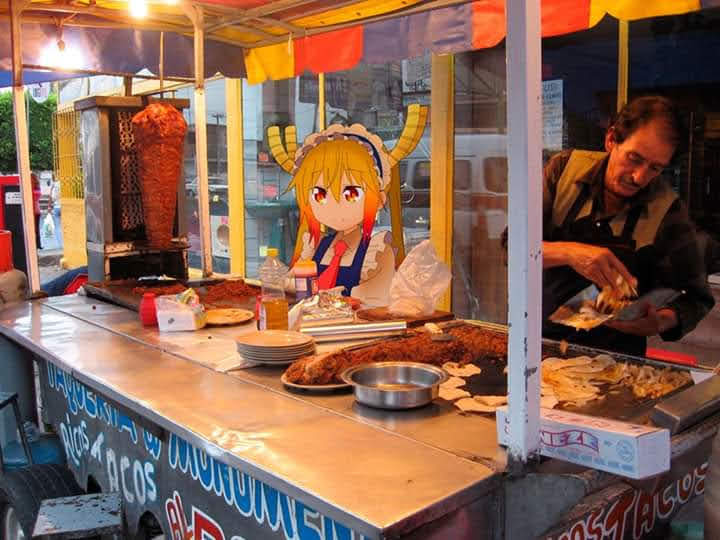
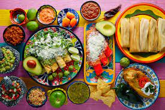
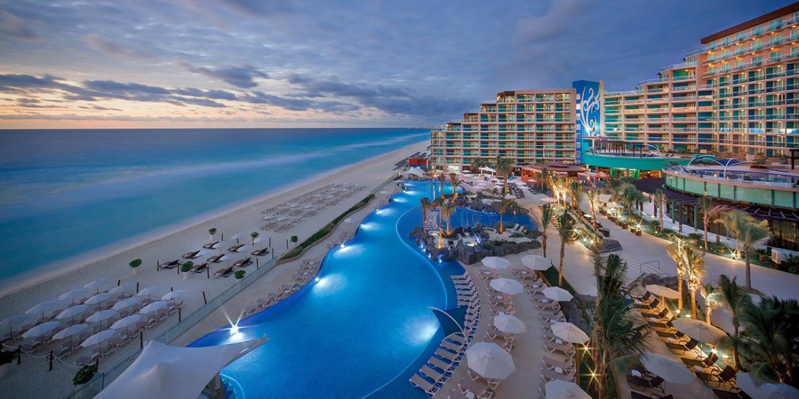
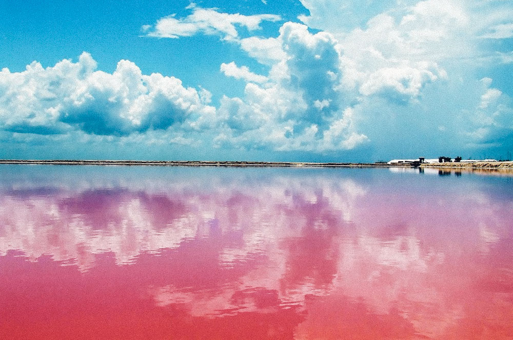

| Gastronomia | Restaurantes |  |
| Sidrerías y asadores | ||
| Bodegas de vino y txakoli |  | |
| Productos típicos | ||
| Escuela de hostelería | ||
| Cultura | archivos y bibliotecas |  |
| museos | ||
| palacios de congreso | ||
| feria de muestras | ||
| Ocio | Entretenimiento y diversión |  |
| Ocio cultural | ||
| Excurciones y deporte |
| Volver |
|---|